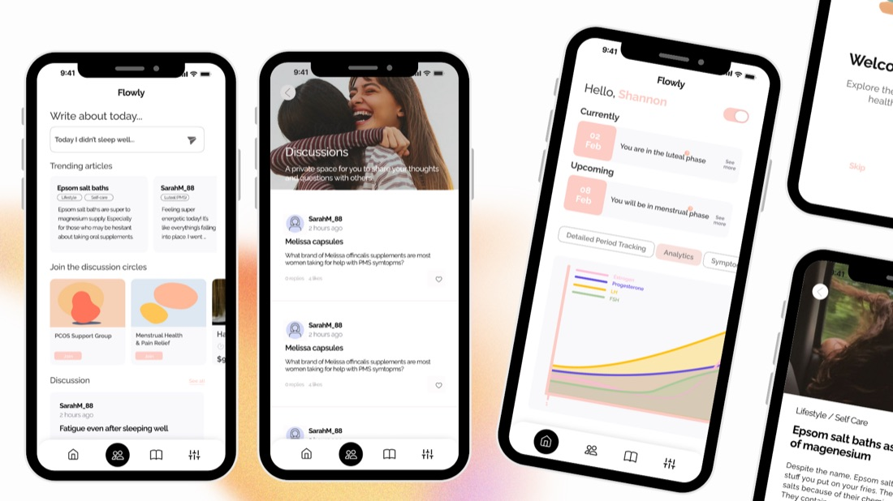
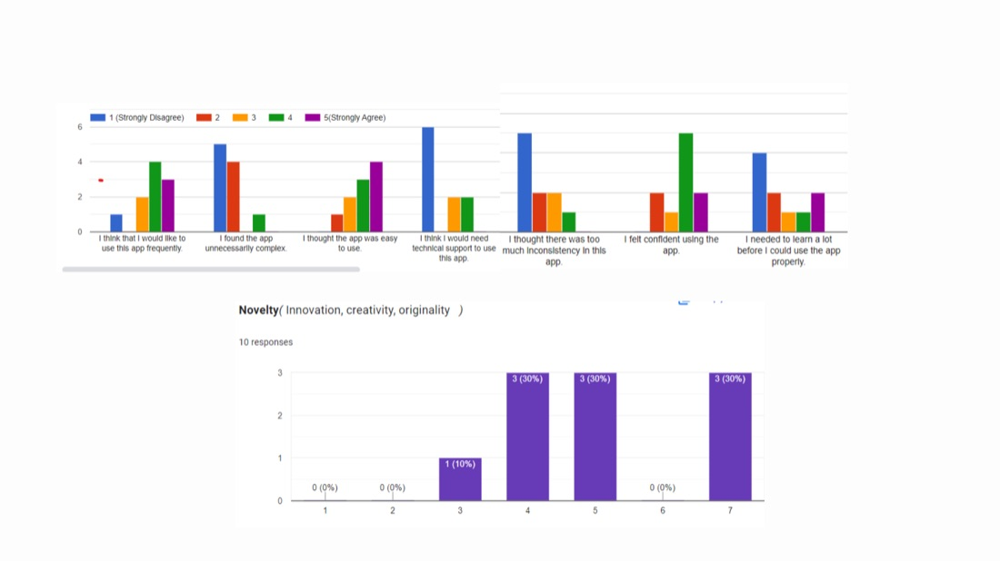

Anis Slimani
Inter-disciplinary Creative
Flowly is a women’s hormonal health app offering personalized cycle tracking, predictive insights, and educational resources. Unlike traditional period-tracking apps, it pairs an intuitive interface with AI-driven health recommendations and a community space. Its user-centered design keeps navigation accessible, so users can track symptoms, receive tailored insights, and connect with others.


A user study with ten female participants (ages 23 to 30) confirmed Flowly’s strengths in usability and design, while highlighting areas to improve: onboarding efficiency, interactivity, and AI-driven customization. Future iterations focus on engagement, navigation, and expanding personalization.
In collaboration with Yeajin AHN, Wenting BAI and Zhengtian DING
Flowly is a women’s hormonal health app offering personalized cycle tracking, predictive insights, and educational resources. Unlike traditional period-tracking apps, it pairs an intuitive interface with AI-driven health recommendations and a community space. Its user-centered design keeps navigation accessible, so users can track symptoms, receive tailored insights, and connect with others.
A user study with ten female participants (ages 23 to 30) confirmed Flowly’s strengths in usability and design, while highlighting areas to improve: onboarding efficiency, interactivity, and AI-driven customization. Future iterations focus on engagement, navigation, and expanding personalization.
In collaboration with Yeajin AHN, Wenting BAI and Zhengtian DING